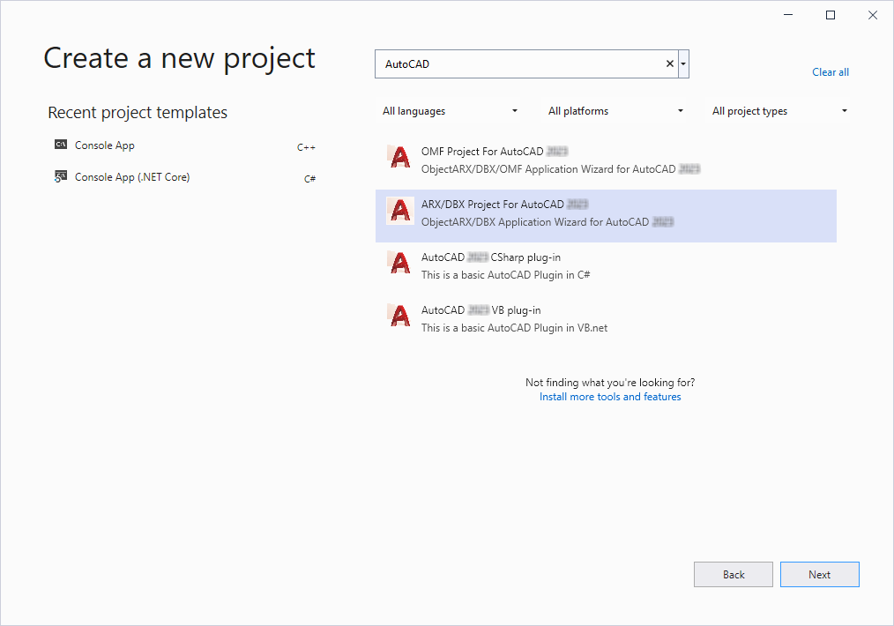

To create a new .arx or .dbx application, begin by setting up a standard unmanaged AutoCAD ObjectARX project. If you have installed the ObjectARX Wizard for AutoCAD 2024, you can use the New Project wizard to begin an ObjectARX project. The ObjectARX Wizard for AutoCAD 2024 can be downloaded from here: https://www.autodesk.com/developautocad
Add the inc directory (default location C:\ObjectARX\inc) to the project C/C++ General property Additional Include Directories. This places both the Plant SDK headers and the standard AutoCAD ObjectARX headers into the #include search path.
Add the lib-x64 folder name to the project Linker Input property Additional Library Directories. This allows the linker to find both the standard ObjectARX and the Plant SDK import libraries.

An aggregate header file AcPpHeaders.h is available that includes all P&ID headers. Including AcPpHeaders.h creates P&ID library-search records that do not need to be identified as Additional Dependencies in the .vcproj Linker Configuration.
If you created the project using the ObjextARX Wizard, place the AcPpHeaders.h include below the wizard-generated arxHeaders.h as shown below.
//StdAfx.h #include "arxHeaders.h" //Generated by the ObjectARX wizard #include "AcPpHeaders.h" //Added for P&ID
Developer’s can include individual headers instead of the aggregate header file. Each class in the Plant SDK2024: Developer Reference (plantsdk_ref.chm) lists both the class definition .h header file name and the .lib import library file name.
To enable C++ interop, in the Properties for the Source File in the Solution Explorer, set Compile with Common Language Runtime support to Common Language Runtime Support (/clr). This setting allows you to access classes that are available only as managed objects from the PnPSDK.